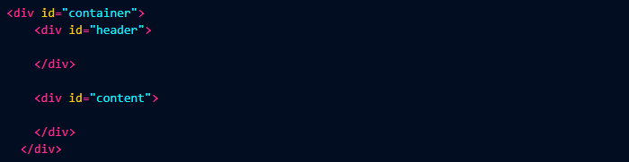
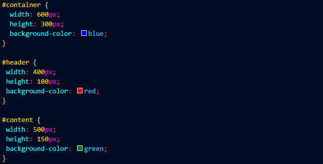
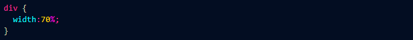

CSS'de Div Nedir ve Nasıl Kullanılır ?
Div, html sayfasında bir bölüm oluşturmak istediğimizde kullanılır.
** "div" etiketi block etikettir yani bir genişlik değeri (width) vermediğimiz sürece satırı olduğu
gibi kaplar ve yükseklik olarakta içerisinde bulunan öğelerin sahip olduğu yükseklik kadar bir
yüksekliğe sahip olurlar.
Örneğin; bir site tasarımını bölmelere ayıralım.
** En dışarıda bir container isminde div oluşturduk.

** Bu container div'ini oluşturmaktaki maksat tüm içerikleri aynı anda ortak bir şekilde yönetmek.

** Div'lere verdiğimiz genişlik değerleri px cinsinden olmak zorunda değildir. Yüzde olarak da
değer verebiliriz. Örneğin tarayıcı genişliği o anda kaç ise "div'in genişliğinin sayfanın %70'i
kadar olmasını isteyebiliriz.

** Eğer bir "div" için bir yükseklik değeri verirsek ve içinde bulunan elemanların yüksekliği div in
yüksekliğini aşarsa bu durumda oluşacak overflow yani taşma için bazı seçeneklerimiz vardır.
overflow : auto | hidden | scroll | visible
auto: Eğer ki içeriklerin yüksekliği sabit değerli div in
yüksekliğinden fazlaysa scrollbar çubukları yani dikey ve yatay kaydırma çubukları görünür hale
gelecektir aksi halde görünmez.
hidden: Bu durumda taşma olan kısım görünmez hale
getirilir.
scrool: auto' nun aksine her zaman kaydırma çubukları
görünür eğer taşma yoksa bile pasif bir şekilde kaydırma çubuklarını görebiliriz.
visible: Taşmalar görünür olur.